Have you ever wanted to have your own google maps?
from idea to tileserver


openstreetmap data to tileserver


Why not google maps?
pic of gmapsWhy not google maps?
Why my own tileserver
The world of tiles
- 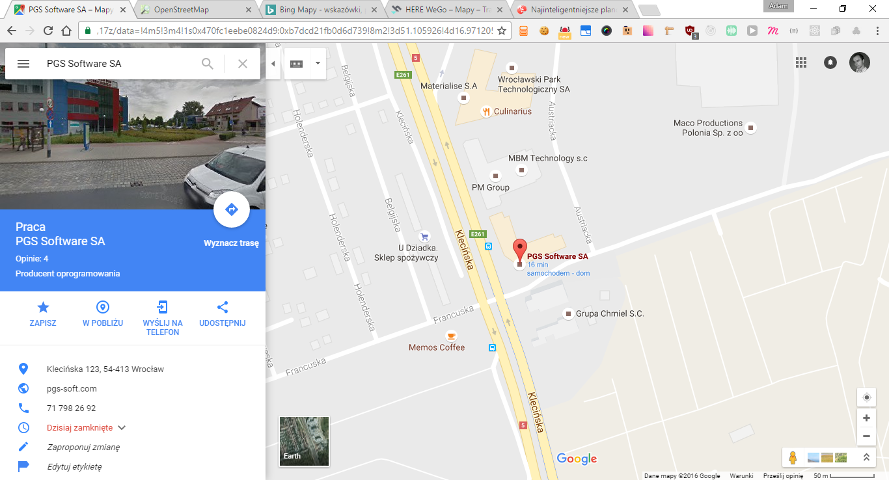
- 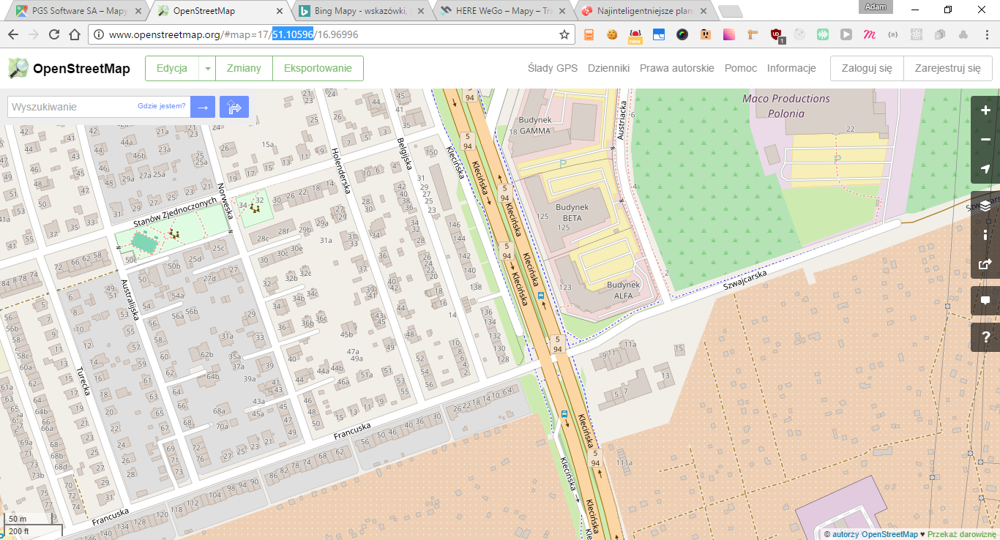
- 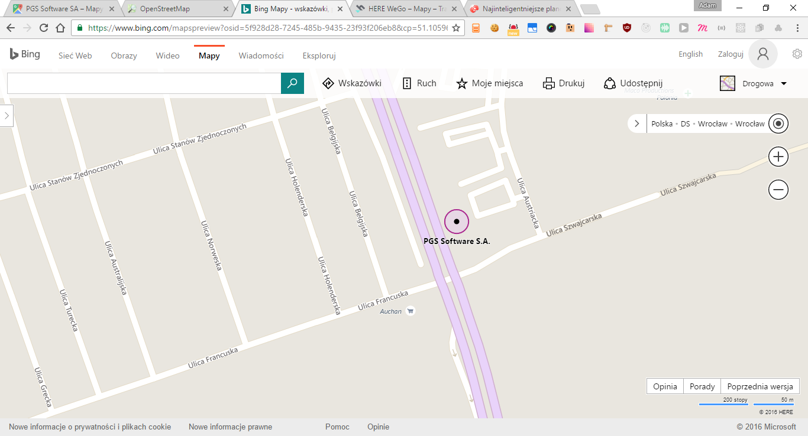
- 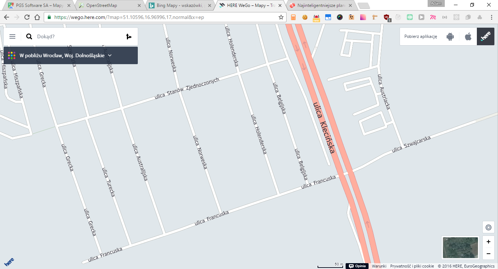
- 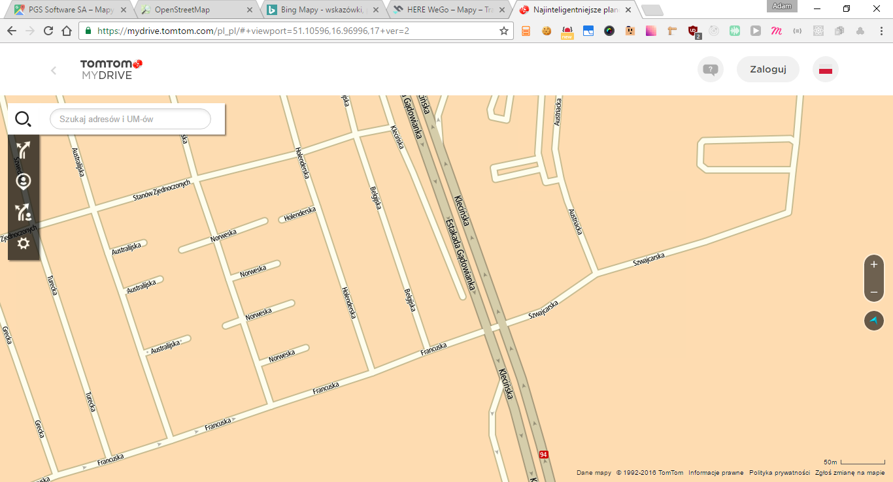
Get tilename by lat, lon and zoom
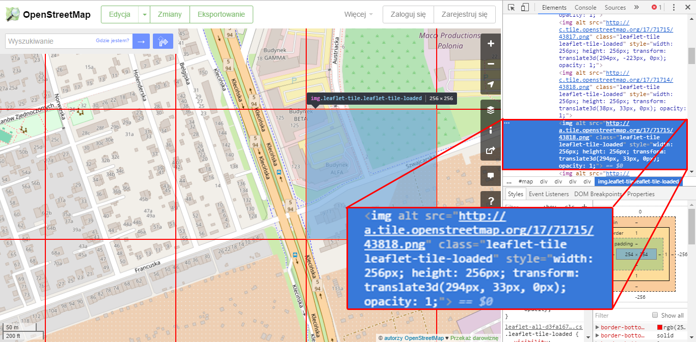Tilenames
256px x 256px
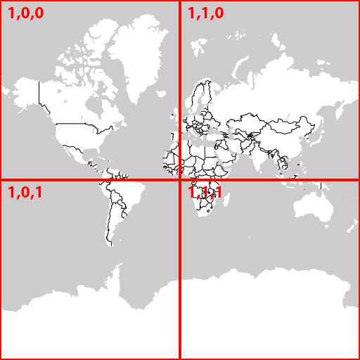 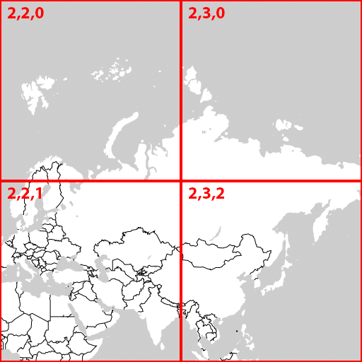 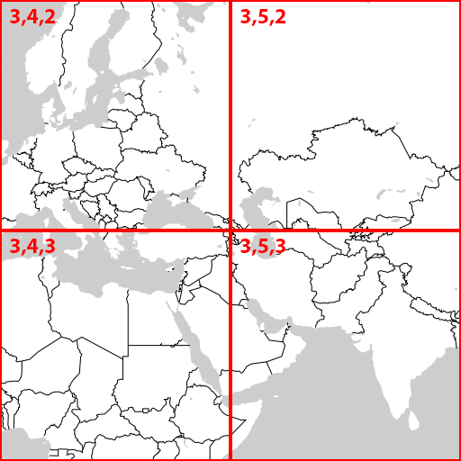
-- lon./lat. -> tile XY
n = 2 ^ zoom
xtile = n * ((lon_deg + 180) / 360)
ytile = n * (1 - (log(tan(lat_rad) + sec(lat_rad)) / π)) / 2
-- tile XY to lon./lat.
n = 2 ^ zoom
lon_deg = xtile / n * 360.0 - 180.0
lat_rad = arctan(sinh(π * (1 - 2 * ytile / n)))
lat_deg = lat_rad * 180.0 / π
Architecture overview
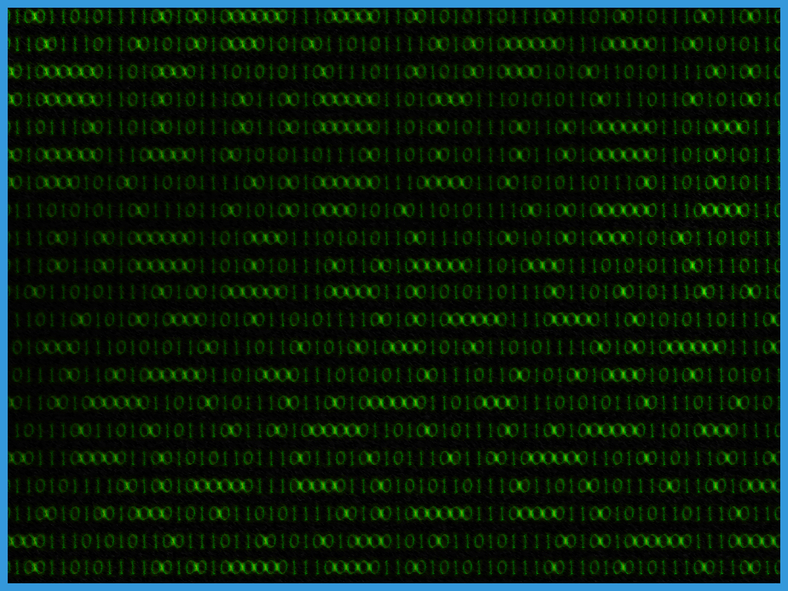
osm data
mapnik node.js
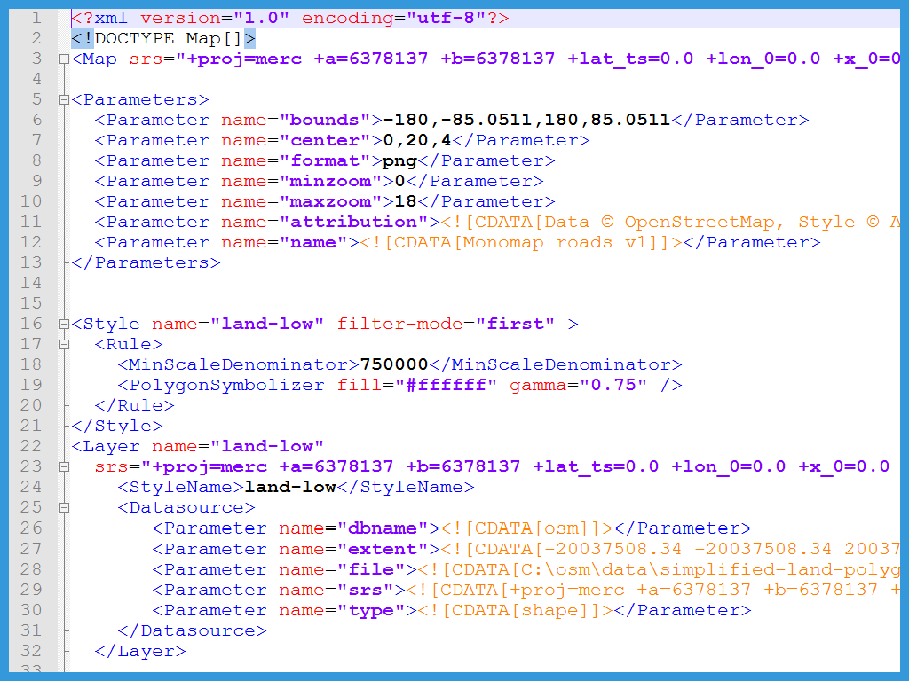
xml stylesheet
postgresql
4xT1 + 1 RDS

React UI
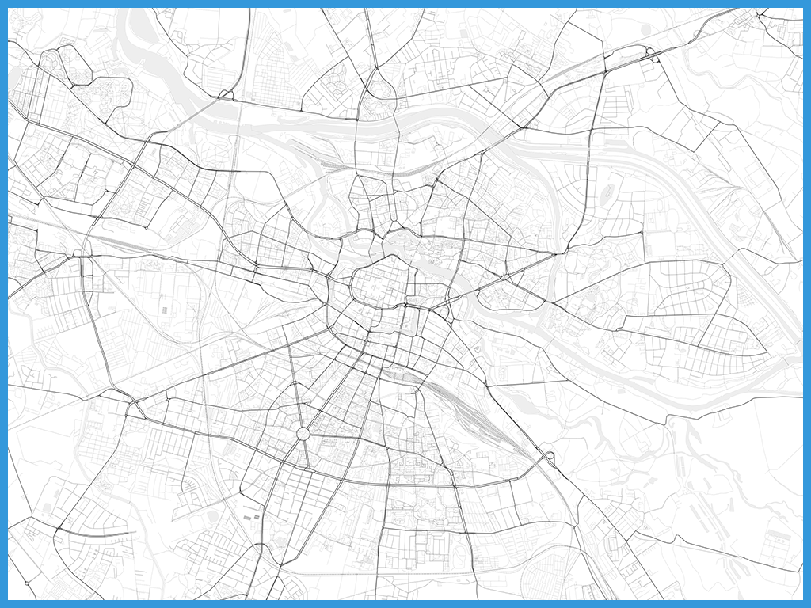
Map
planet.osm file
Import data to postgresql
why postgresql?
- postgis
PostGIS is a spatial database extender for PostgreSQL object-relational database.
- hstore extension
sets of key/value pairs within a single PostgreSQL value
- amazon rds
Once provisioned, you can scale from 5GB to 6TB of storage and from 1,000 IOPS to 30,000 IOPS.
dockerise import job
openfirmware/docker-osm2pgsql
# DOCKER-VERSION 1.5.0
# VERSION 0.2
FROM debian:wheezy
MAINTAINER James Badger <james@jamesbadger.ca>
ENV DEBIAN_FRONTEND noninteractive
RUN apt-get update && apt-get install -y \
autoconf \
automake \
g++ \
git-core \
libboost-dev \
libboost-filesystem-dev \
libboost-system-dev \
libboost-thread-dev \
libbz2-dev \
libgeos++-dev \
libgeos-dev \
liblua5.2-dev \
libpq-dev \
libproj-dev \
libprotobuf-c0-dev \
libtool \
libxml2-dev \
lua5.2 \
make \
protobuf-c-compiler &&\
rm -rf /var/lib/apt/lists/*
ENV HOME /root
ENV OSM2PGSQL_VERSION 0.87.2
RUN mkdir src &&\
cd src &&\
git clone --depth 1 --branch $OSM2PGSQL_VERSION https://github.com/openstreetmap/osm2pgsql.git &&\
cd osm2pgsql &&\
./autogen.sh &&\
./configure &&\
make &&\
make install &&\
cd /root &&\
rm -rf src
ENTRYPOINT ["/bin/bash"]
osm2pgsql
osm2pgsql SVN version af61cae663 (64bit id space)
release notes: 'Windows version built by Dominik Perpeet (http://www.customdebug.com/osm2pgsql/index.html)'
Usage:
osm2pgsql.exe [options] planet.osm
osm2pgsql.exe [options] planet.osm.{gz,bz2}
osm2pgsql.exe [options] file1.osm file2.osm file3.osm
This will import the data from the OSM file(s) into a PostgreSQL database
suitable for use by the Mapnik renderer
Options:
-a|--append Add the OSM file into the database without removing
existing data.
-b|--bbox Apply a bounding box filter on the imported data
Must be specified as: minlon,minlat,maxlon,maxlat
e.g. --bbox -0.5,51.25,0.5,51.75
-c|--create Remove existing data from the database. This is the
default if --append is not specified.
-d|--database The name of the PostgreSQL database to connect
to (default: gis).
-i|--tablespace-index The name of the PostgreSQL tablespace where
all indexes will be created.
The following options allow more fine-grained control:
--tablespace-main-data tablespace for main tables
--tablespace-main-index tablespace for main table indexes
--tablespace-slim-data tablespace for slim mode tables
--tablespace-slim-index tablespace for slim mode indexes
(if unset, use db's default; -i is equivalent to setting
--tablespace-main-index and --tablespace-slim-index)
-l|--latlong Store data in degrees of latitude & longitude.
-m|--merc Store data in proper spherical mercator (default)
-M|--oldmerc Store data in the legacy OSM mercator format
-E|--proj num Use projection EPSG:num
-u|--utf8-sanitize Repair bad UTF8 input data (present in planet
dumps prior to August 2007). Adds about 10% overhead.
-p|--prefix Prefix for table names (default planet_osm)
-s|--slim Store temporary data in the database. This greatly
reduces the RAM usage but is much slower. This switch is
required if you want to update with --append later.
--drop only with --slim: drop temporary tables after import (no updates).
-S|--style Location of the style file. Defaults to D:/maps/default.style
-C|--cache Now required for slim and non-slim modes:
Use up to this many MB for caching nodes (default: 800)
-U|--username Postgresql user name
password can be given by prompt or PGPASS environment variable.
-W|--password Force password prompt.
-H|--host Database server hostname or socket location.
-P|--port Database server port.
-e|--expire-tiles [min_zoom-]max_zoom Create a tile expiry list.
-o|--expire-output filename Output filename for expired tiles list.
-r|--input-reader Input frontend.
libxml2 - Parse XML using libxml2. (default)
primitive - Primitive XML parsing.
pbf - OSM binary format.
-O|--output Output backend.
pgsql - Output to a PostGIS database. (default)
gazetteer - Output to a PostGIS database suitable for gazetteer
null - No output. Useful for testing.
-x|--extra-attributes
Include attributes for each object in the database.
This includes the username, userid, timestamp and version.
Note: this option also requires additional entries in your style file.
-k|--hstore Add tags without column to an additional hstore (key/value) column to postgresql tables
--hstore-match-only Only keep objects that have a value in one of the columns
- (normal action with --hstore is to keep all objects)
-j|--hstore-all Add all tags to an additional hstore (key/value) column in postgresql tables
-z|--hstore-column Add an additional hstore (key/value) column containing all tags
that start with the specified string, eg --hstore-column "name:" will
produce an extra hstore column that contains all name:xx tags
-G|--multi-geometry Generate multi-geometry features in postgresql tables.
-K|--keep-coastlines Keep coastline data rather than filtering it out.
By default natural=coastline tagged data will be discarded based on the
assumption that post-processed Coastline Checker shapefiles will be used.
--exclude-invalid-polygon
-I|--disable-parallel-indexing Disable indexing all tables concurrently.
--unlogged Use unlogged tables (lost on crash but faster). Requires PostgreSQL 9.1.
--cache-strategy Specifies the method used to cache nodes in ram.
Available options are:
dense: caching strategy optimised for full planet import
chunked: caching strategy optimised for non-contigouse memory allocation
sparse: caching strategy optimised for small extracts
optimized: automatically combines dense and sparse strategies for optimal storage efficiency.
optimized may use twice as much virtual memory, but no more physical memory
The default is "sparse"
--flat-nodes Specifies the flat file to use to persistently store node information in slim mode instead of in pgsql
This file is a single > 16Gb large file. This method is only recomended for full planet imports
as it doesn't work well with small extracts. The default is disabled
-h|--help Help information.
-v|--verbose Verbose output.
Add -v to display supported projections.
Use -E to access any espg projections (usually in /usr/share/proj/epsg)
import to postgresql
SET pgpassword=****
/data/osm2pgsql.exe" -cG -d gis -S /my-styles.style" -C 4096 --hstore -U postgres data/dolnoslaskie-latest.osm.bz2
mapnik
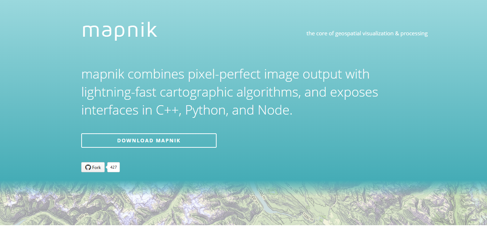mapnik/mapnik-node
var mapnik = require('mapnik');
var fs = require('fs');
// register fonts and datasource plugins
mapnik.register_default_fonts();
mapnik.register_default_input_plugins();
var map = new mapnik.Map(256. 256);
map.load('./test/stylesheet.xml', function(err,map) {
if (err) throw err;
map.zoomAll();
var im = new mapnik.Image(256, 256);
map.render(im, function(err,im) {
if (err) throw err;
im.encode('png', function(err,buffer) {
if (err) throw err;
fs.writeFile('map.png',buffer, function(err) {
if (err) throw err;
console.log('saved map image to map.png');
});
});
});
});
sample map
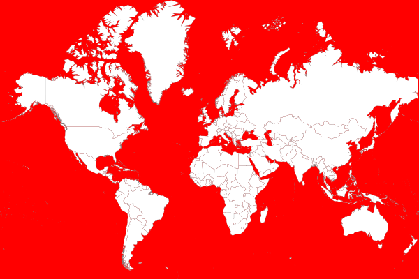stylesheet.xml
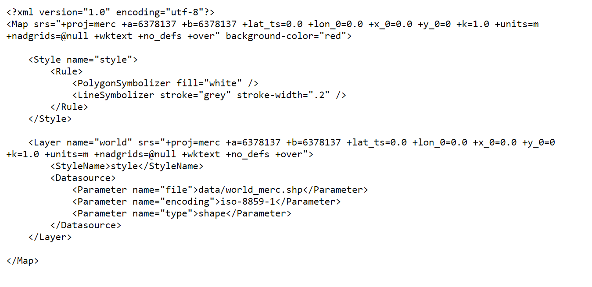 github.com/mapnik/mapnik/wiki/XMLConfigReferenceMapnik styling
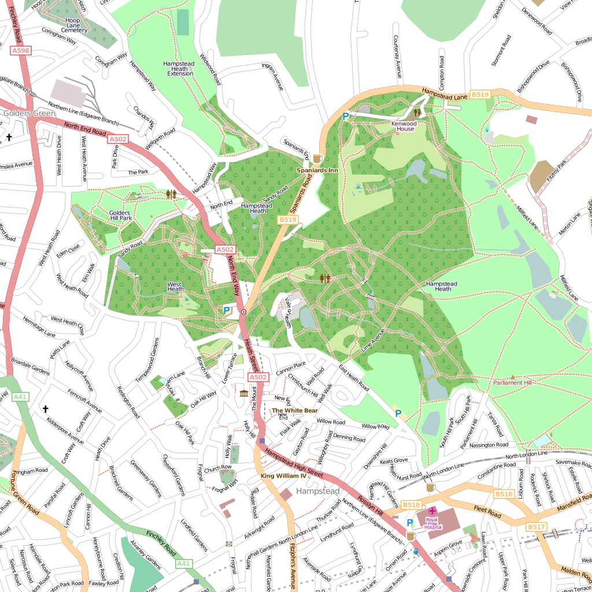stylesheet.xml
3557 lines
172 639 characters
CartoCSS
#world {
line-color: #fff;
line-width: 3;
}
#world::outline {
line-color: #000;
line-width: 6;
}
tiles, a lot of tiles...
| zoom level | tile coverage | number of tiles | tile size in degrees |
|---|---|---|---|
| 0 | 1 | 1 | 360° x 170.1022° |
| 1 | 2 x 2 | 4 | 180° x 85.0511° |
| 2 | 4 x 4 | 16 | 90° x 42.5256° |
| n | 2^n x 2^n | 2^2n | 360/2n° x 170.1022/2n° |
| 12 | 4096 * 4096 | 16 777 216 | 0.0879° x 0.0415° |
| 16 | 2^32 = 4 294 967 | ||
| 17 | 17 179 869 184 | ||
| 18 | 68 719 476 736 | ||
| 19 | 274 877 906 944 |
Caching tiles
avg. tile size ~= 16 KB
| zoom level | tiles count | size (KB) | cumulative size (MB) | cumulative size (GB) |
|---|---|---|---|---|
| 1 | 4 | 16 | 0.06 | 0.0001 |
| 2 | 16 | 256 | 0.25 | 0.0003 |
| 5 | 1 024 | 16 384 | 21.82 | 0.0218 |
| 6 | 4 096 | 65 536 | 87.36 | 0.0874 |
| 7 | 16 384 | 262 144 | 349.50 | 0.3495 |
| 8 | 65 536 | 1 048 576 | 1 398.08 | 1.3981 |
| 9 | 2 62 144 | 41 94 304 | 5 592.38 | 5.5924 |
| 10 | 1 048 576 | 16 777 216 | 22 369.60 | 22.3696 |
| 11 | 4 194 304 | 67 108 864 | 89 478.46 | 89.4785 |